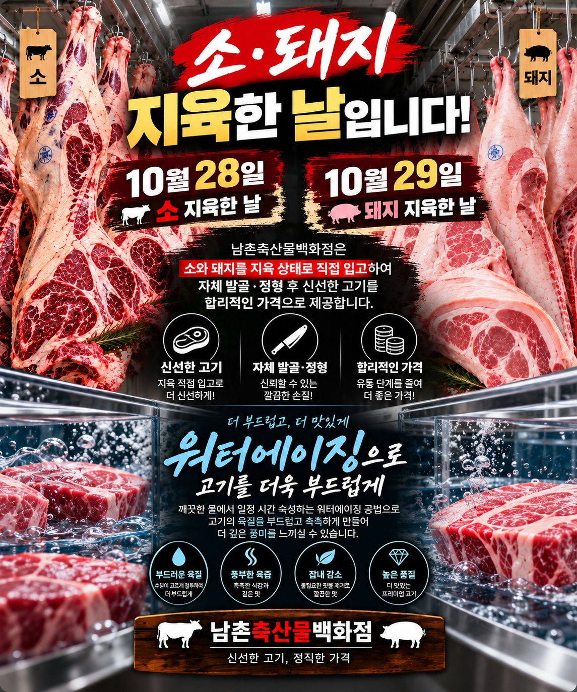

신선함이 다른
좋은 고기를, 더 가까이
신선한 국내산 육류를 합리적인가격으로 만나보세요.
신선하고 품질 좋은 국내산 한우를 만나보세요.
신선하고 품질 좋은 국내산 한돈을 만나보세요.
특제 양념으로 더욱 맛있는 양념육을 만나보세요.
다양한 냉동 육류를 합리적인 가격으로 만나보세요.
간편하고 맛있는 완제품 메뉴를 만나보세요.
남촌축산물백화점은 언제나 신선한 고기와정직한 가격으로 지역 주민 여러분의 식탁을책임지겠습니다.
인천 남동구 비류대로 762번길 17(남촌농산물도매시장 정문 직진 후 좌측)
바로 앞 전용 주차장 완비!편리하게 주차하시고 쇼핑하세요.
영업시간월 ~ 일 08:00 ~ 20:00연중무휴
